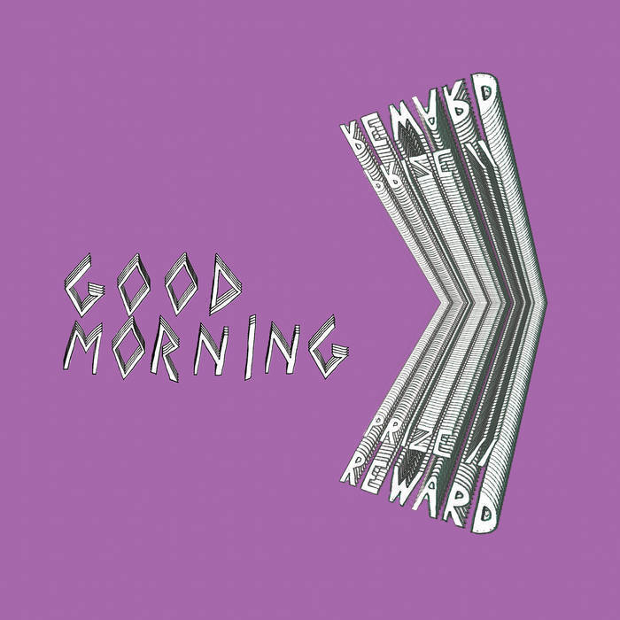

🮠I’m absolutely loving my first playthrough of Persona 5 Royal. The Take Your Time podcast is a wonderful companion for the game.
💻 Work-life balance is such a tricky thing. I’ve been good about creating physical separation when I log off, but the mental compartmentalization has been particularly difficult lately.
💻 CDK is such a game-changer. It addresses pretty much all of my complaints with CloudFormation. Now to learn TypeScript better.
🮠I’m finally getting around to playing Final Fantasy VII Remake. The graphics are absolutely beautiful. The soundtrack has me feeling nostalgic too. It’s mind-blowing how far gaming has come since I first played the original.
💻 I wonder how long it will be until the new Apple ARM chips are viable for engineering outside of Xcode (e.g., virtualization support, Docker support, widespread adoption by Homebrew packages, etc.).
💻 I’m trying out Cloud9 on AWS:
Resources:
rCloud9Environment:
Type: AWS::Cloud9::EnvironmentEC2
Properties:
AutomaticStopTimeMinutes: 30
ConnectionType: CONNECT_SSM
Description: Web-based cloud development environment
InstanceType: m5.large
Name: Cloud9Environment
Repositories:
- PathComponent: '/repos'
RepositoryUrl: !GetAtt rCloud9WorkingRepository.CloneUrlHttp
rCloud9WorkingRepository:
Type: AWS::CodeCommit::Repository
Properties:
RepositoryName: Cloud9WorkingRepository
RepositoryDescription: A CodeCommit repository for stashing work from the Cloud9 IDE
💻 I’ve been using Visual Studio Code even more than the JetBrains suite lately. It may be my primary editor very soon.
🈠I benched Drew Brees for Joey Burrow last night. Thanks to a garbage time touchdown, it’s looking like that decision will pay off.
🈠I’m currently preparing for the draft for my golf score fantasy football league. The objective to get the lowest, non-zero score for each position. If your player scores a zero (without a catch, carry, or pass), a ton of points get added. Any thoughts on who I should draft?
🏈🏀 Not a great sports day for me. It started with my RB2 getting waived and ended with a Russell Westbrook implosion. I’m hoping for Leonard Fournette to find a good home and that the Rockets don’t choke in game seven.


The out of the box Netlify CI/CD features and GitHub pull request integration with deploy previews are fantastic.

I made some good progress on my app this evening. I’ve still got a long way to go before I feel truly comfortable doing iOS development.


I’ve been using Visual Studio Code for text transformation that I might have previously written a script to do. I just learned that replace functionality supports capture groups in regular expressions. For example, replacing "(\d+)" with $1.
🈠Working on a little CLI tool to generate Markdown for power rankings populated with Sleeper fantasy football data for my league’s new Gatsby site. I’m already loving our decision to leave ESPN.


📠I’ve felt particularly fatigued with notifications lately. Endless IMs, emails, group chats, text messages, phone calls, etc. I need to not be so obsessive about getting my notifications cleared. I’m also still working on how to filter the noise too.
“Have you heard? I’m not worth my weight in words.” 🵠Mirror Freak by Good Morning

🈠Seems like it’s only a matter of time now before one of the P5 conferences officially announces the cancelation or postponement of college football. It’s the right call but still a tough pill to swallow for so many reasons.


I’ve felt myself withdrawing more and more from the internet due to constant, crippling negativity. From incendiary Reddit threads about pointless fandoms to the unbridled elitism of StackOverflow to the rampant distortion of public opinion by malicious bots on Twitter, even just being a bystander has started to bum me out. At first, I didn’t know if there was much point to microblogging since I already have a dedicated blog. I’m still very new to this concept but excited for something different.